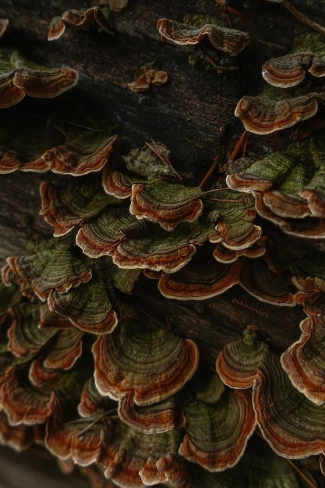

О нас
Мы помогаем быстро собрать поездку по зелёным местам Беларуси.
Наш сервис создан для тех, кто любит путешествовать по родной стране: парки, заповедники и усадьбы собраны в одном каталоге.
Планировщик сам считает время и бюджет и предупреждает, если маршрут получился слишком длинным.
Наши принципы
- Понятный и быстрый интерфейс
- Честный расчёт времени и стоимости
- Бережное отношение к природе
12объектов
4категории
4маршрута
